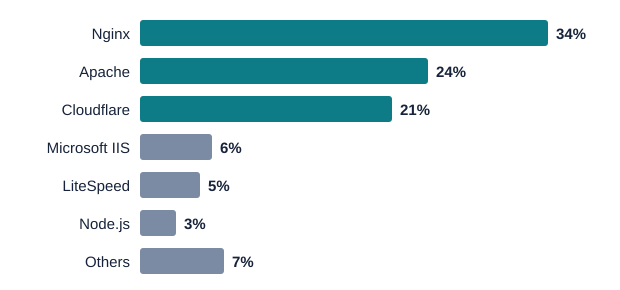

Web Server Software
Several programs can act as a web server. A few of them run most of the internet.
Who Uses What Today (2025)

| Server | Share | Known for |
|---|---|---|
| Nginx | 34% | Speed under heavy traffic; used by Netflix and Airbnb |
| Apache | 24% | Flexibility and add-on modules; around since 1995 |
| Cloudflare | 21% | Cloud network that protects and speeds up sites |
| Microsoft IIS | 6% | Built into Windows Server |
| LiteSpeed | 5% | Fast WordPress hosting |
| Node.js | 3% | JavaScript servers and real-time apps like chat |
| Others | 7% | Specialized servers such as Caddy and Tomcat |
Key takeaway: Nginx has passed Apache as the most-used web server, and cloud-based options like Cloudflare are growing fast.
Apache: The Classic
Started in 1995, free and open source, and about 24% of websites.
- How it started: developers emailed each other fixes (“patches”) for the NCSA server.
- How it works: it gives each visitor’s request its own process or thread. This works well for most sites but uses more memory under very heavy traffic.
- Modules: a huge library of add-ons for security, programming languages and more.
- Configuration: text files like
httpd.conf, plus.htaccessfiles that let site owners change settings per folder.
Nginx: The Speed King
Started in 2004, free and open source, and about 34% of websites.
- How it started: Igor Sysoev built it to handle 10,000 visitors at the same time, a problem known as C10K.
- How it works: a few worker processes each juggle many visitors at once, like one efficient cashier handling many orders.
- Traffic director: often sits in front of other servers as a reverse proxy and load balancer.
- Real-world users: Netflix, Airbnb, Dropbox and many other large sites.
Apache vs. Nginx
| Apache | Nginx | |
|---|---|---|
| Released | 1995 | 2004 |
| Handles visitors by | A process or thread per connection | A few event-driven workers |
| Main strength | Flexible, huge module library | Fast, low memory use |
| Main weakness | Slows down under extreme traffic | Less per-folder customization |
| Config file | httpd.conf, .htaccess | nginx.conf |
Other Web Servers
Microsoft IIS
Microsoft’s server, built into Windows. Popular with companies already using Microsoft tools.
LiteSpeed
A commercial server focused on speed that can read Apache’s settings. Common with WordPress hosts.
Caddy
A newer server written in Go that sets up HTTPS automatically for every site.
Apache Tomcat
A specialized server for websites written in Java, used in large enterprise apps.
Web Servers in the Cloud
Running a site used to mean buying an expensive physical server. Now you can rent one for a few dollars a month.
- Amazon Web Services (AWS): the largest cloud provider; pay only for what you use.
- Google Cloud: built on Google’s fast global network.
- Microsoft Azure: a top choice for businesses already using Windows.
- Docker containers: package a web server so it can be started, stopped and moved easily.